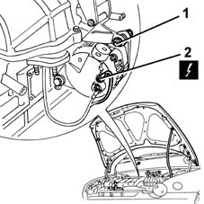
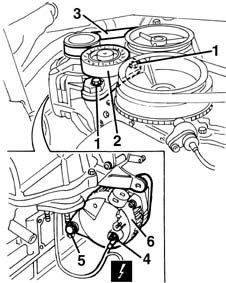
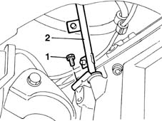
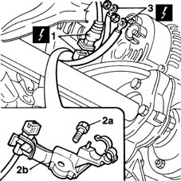
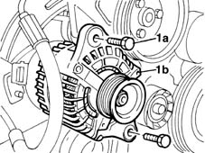

5530A14 alternator - r+r for versions with air conditioner
- Path
- Procedures > 55 ELECTRICAL EQUIPMENT > 5530 CURRENT GENERATOR > 5530A alternator and components > 5530A14 alternator - r+r for versions with air conditioner
- Kind
- repair procedure (removal / refitting; the operation number is the code)
- Applies to
- all engines; all production periods
- Interactive page
- https://sloeber94.github.io/elrnDB-fMltpl/en/#/2891905
Applies to: engines: 1.6 16v; all production periods
 Removing
Removing
 Refitting
RefittingPosition the vehicle on the lift and open the bonnet lid.
1. Working from the top of the engine compartment, undo and remove the upper bolt fixing the alternator.
2. Disconnect the upper electrical connection.
 | Name | Connector |
|---|---|---|
2 | Alternator |

Applies to: engines: 1.6 16v; all production periods
Raise the car.
1. Undo the bolts fixing the belt tensioner.
2. Remove the belt tensioner.
3. Remove the belt from the alternator pulley.
4. Disconnect the lower electrical connection.
| Name | Connector |
|---|---|---|
4 | Alternator |
5. Undo the bolt and remove it.
6. Recover the alternator.

Applies to: engines: 1.6 16v; all production periods
Refitting
RemovingCheck that the alternator is not damaged.
Position the alternator and fix it using the bolts.
 | Fastening | Component | Ø | Value (daNm) |
|---|---|---|---|---|
- | Bolt | ALTERNATOR ASSEMBLY | M10 | 5 |
| Fastening | Component | Ø | Value (daNm) |
|---|---|---|---|---|
- | Bolt | ALTERNATOR ASSEMBLY | M12 | 7 |
Connect the electrical connections.
- 1092B51 alternato/water pump drive belt - r+r for versions with air conditioner
Applies to: engines: 1.9 JTD 8V; all production periods
Removing
Refitting1048A10 AIR CLEANER FILTERING ELEMENT - REPLACE
1016A10 sound-proofing cover - r + r
1080D34 engine oil vapour separator - r + r
4450B10 Front WHEEL (one) - R.R.
7055B42 Additional FRONT WHEEL ARCH (one), left or right - R.R.
1092G10 single engine belt r r
1. Undo the lower bolt of the engine oil dipstick.
2. Remove the engine oil dipstick.

Applies to: engines: 1.9 JTD 8V; all production periods
1. Disconnect the electrical connection for the rpm sensor.
| Name | Connector |
|---|---|---|
1 | RPM sensor |
2. Undo the retaining bolt (2a) and remove the electrical wiring mounting bracket (2b).
3. Disconnect the alternator's electrical wiring.
| Name | Connector |
|---|---|---|
3 | Alternator |

Applies to: engines: 1.9 JTD 8V; all production periods
1. Undo the fixing bolts.
2. Remove the alternator, withdrawing it from the top of the engine compartment.

Applies to: engines: 1.9 JTD 8V; all production periods
Refitting
RemovingFit the alternator and screw the fixing bolts onto the mounting.
Tighten the bolts fixing the alternator to the mounting to the recommended torque.
| Fastening | Component | Ø | Value (daNm) |
|---|---|---|---|---|
- | Bolt | ALTERNATOR ASSEMBLY | M10 | 5 |
| Fastening | Component | Ø | Value (daNm) |
|---|---|---|---|---|
- | Bolt | ALTERNATOR ASSEMBLY | M12 | 7 |
Connect the alternator's electrical wiring.
Fit the electrical wiring securing bracket and fix it to the cylinder block with its bolt.
Connect the electrical connection for the rpm sensor.
Fit the oil dipstick and tighten the bottom retaining bolt.
1092G10 single engine belt r r
7055B42 Additional FRONT WHEEL ARCH (one), left or right - R.R.
4450B10 Front WHEEL (one) - R.R.
1080D34 engine oil vapour separator - r + r
Topics linked from this page (11)
- 1016A10 sound-proofing cover - r + r
- 1048A10 AIR CLEANER FILTERING ELEMENT - REPLACE
- 1080D34 engine oil vapour separator - r + r
- 1092G10 single engine belt r r
- 4450B10 Front WHEEL (one) - R.R.
- 5530B10 battery - r+r
- 7055B42 Additional FRONT WHEEL ARCH (one), left or right - R.R.
- A10 Alternator
- A010A Alternator ( BATTERY POSITIVE )
- A010B Alternator ( ENGINE )
- K46 RPM sensor